Message goes here.
> DIMASA × PHI Lab · 24+ Digital Twins, Autonomy Stacks & TRL-4 Space HIL Rigs [LIVE]
Three-layer edge-deployable digital twin for Boeing 787-8 main landing gear prognostics. Layer 1 formulates a real-time two-mass ODE twin (Arrhenius viscosity, Stribeck friction, Hertzian contact) solving a touchdown in 18.2 ms on CPU (~300× faster than multibody solvers). Layer 2 runs zero-leakage CNN-BiLSTM-Attention with SHAP alignment (r=0.781), and Layer 3 uses offline Llama-3.2 to emit ATA Ch 32 work orders in 908 ms.
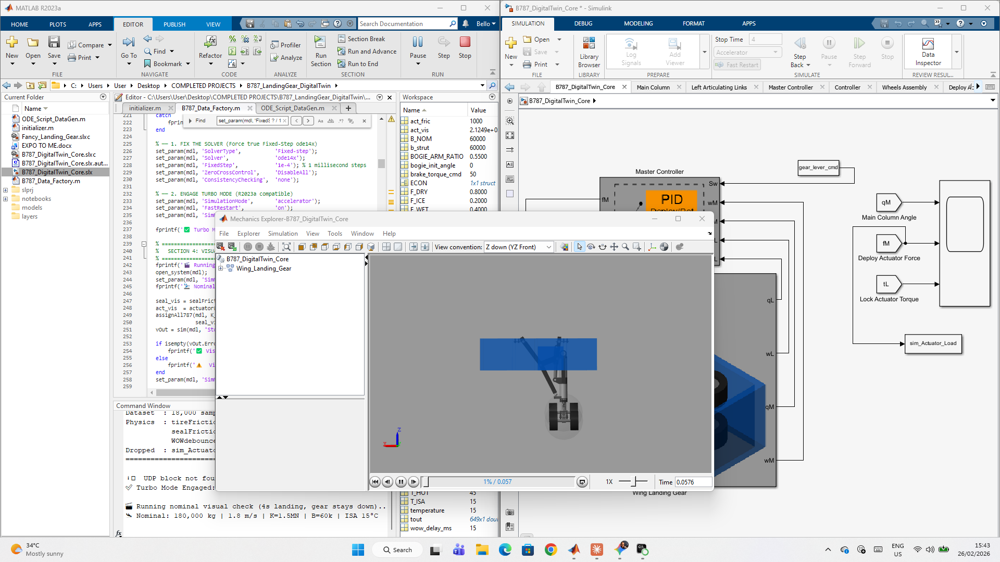
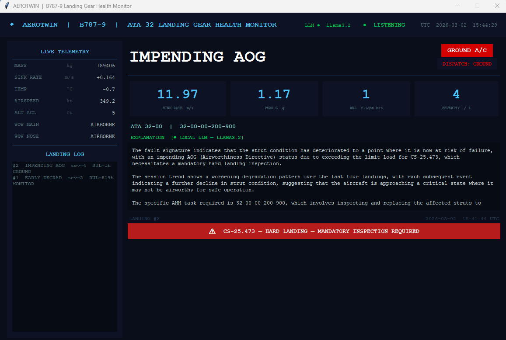
Accepted for presentation Jan 13, 2027 (Session CSS-03, Aerospace Cyber Resilience). Secures five aviation communication protocols — ADS-B, ACARS, ADS-C, CPDLC & operational telemetry — via a 7-container Hyperledger Fabric permissioned blockchain (CCAAS mode), sub-ms Ed25519 signing, and a Physics-Informed Digital Twin Validator (PIDT) validated against ICAO Doc 10037 & RTCA DO-326A.
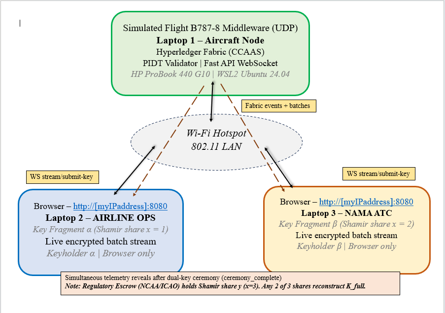
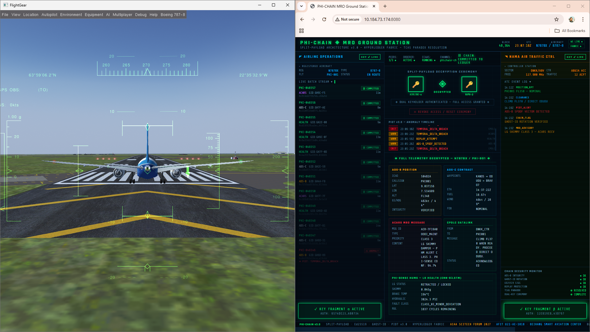
A closed‑loop PHM Digital Twin for the Boeing 787‑8 ignition system. Overcomes run‑to‑failure data scarcity with a physics‑informed MATLAB ODE solver generating 27,000 samples across 11 fault modes. A LightGBM regressor maps micro‑electrical degradation to RUL, deployed via a decoupled FastAPI microservice with a God-Mode GUI.
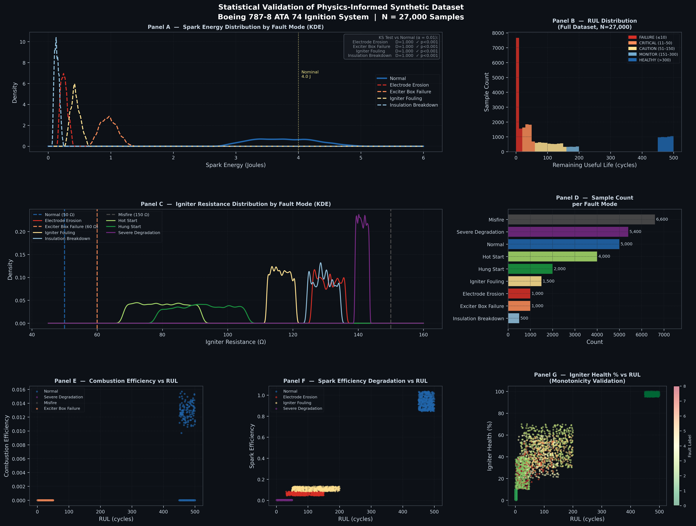
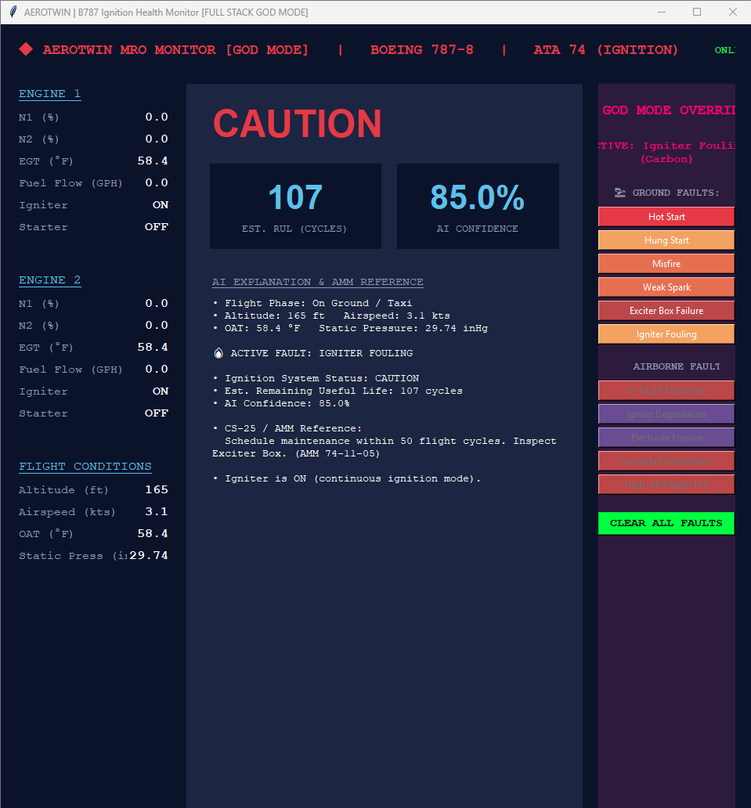
A multi-domain MATLAB/Simscape Multibody digital twin (oleo-pneumatic strut dynamics, tyre-ground contact, actuator kinematics) directly traceable to EASA CS-23.473 / CS-23.479 airworthiness standards. Coupled to a 1D-CNN-BiLSTM classifier over ATA Ch 32 telemetry at 47 ms latency and 350× cost reduction versus commercial HUMS.
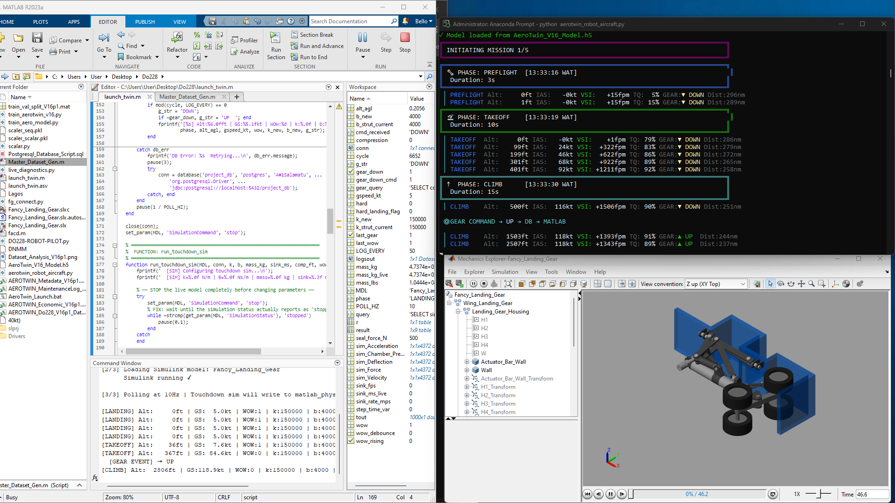
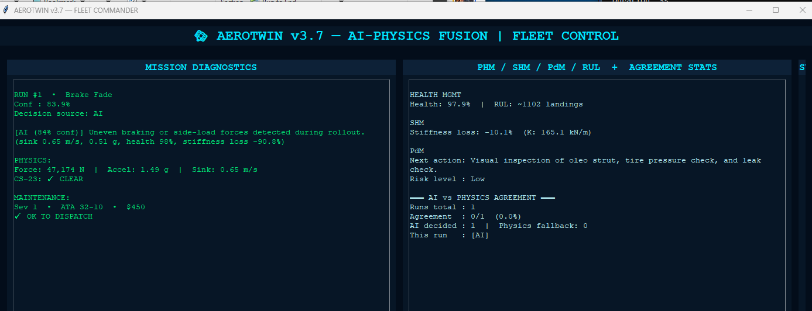
A first-principles 14-seat VIP transport integrating aerodynamics, structures, propulsion, and systems architecture. Embeds a native PHI-SENSE HUMS grouping 1,027 concurrent structural strain sensors. A CNN-BiLSTM-Attention deep classifier delivers 47ms state inference at 98.5% accuracy. A permissioned PHI-CHAIN ledger secures tamper-proof lifecycle log tracking.

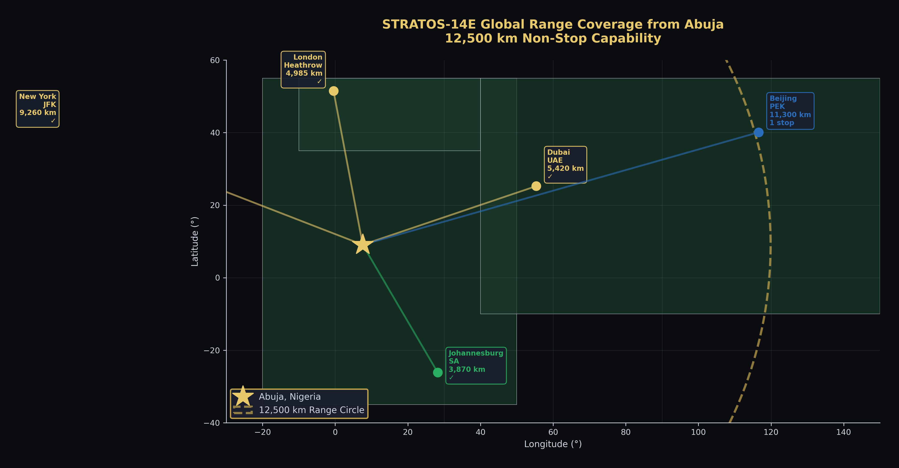
Co-authored with Tumsah Usman Ibrahim and supervised by Dr. Godwin Abbe. Zero-ROS UAV pipeline bridging ArduPilot SITL (WSL2 Ubuntu), FlightGear 3D (Windows 11) and a VisDrone-fine-tuned YOLOv8n engine over non-blocking UDP — achieving 165.3 ms median inference on integrated Intel Iris Xe graphics (1,296 tagged detections over 21.9 min).
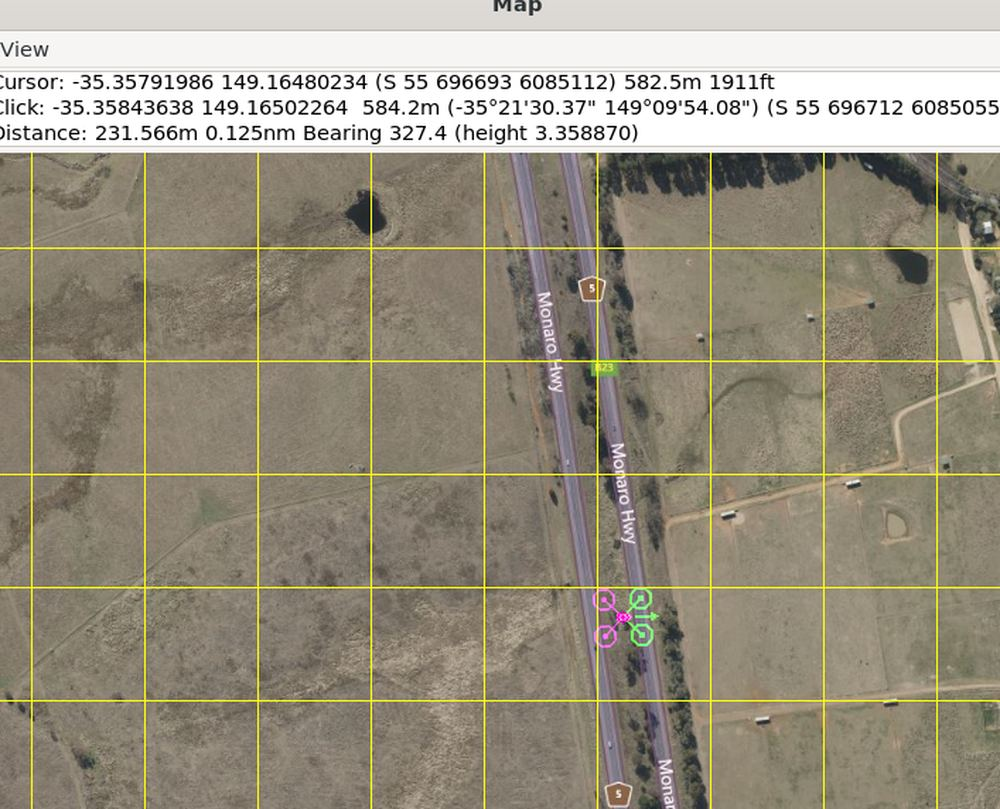
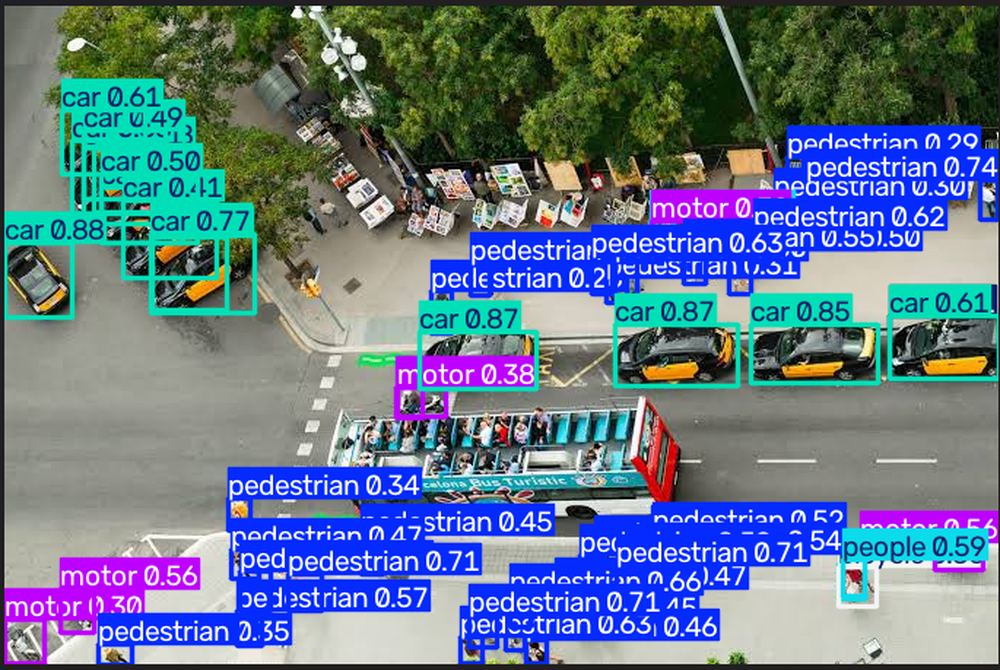
Accepted for presentation Jan 14, 2027 (Session MVCE-04/FD-64/UQ-17). Operates a personal OpenFOAM v2406 reactingFoam (300×150 mesh) RDE lab spanning equivalence ratios φ∈[0.60, 1.37], correcting a 4× Chapman-Jouguet velocity error. A 4.3M-param CNN-BiLSTM CVAE expands 12 CFD runs into a 72-case (1.48 GB) benchmark + 1.2M-param surrogate.
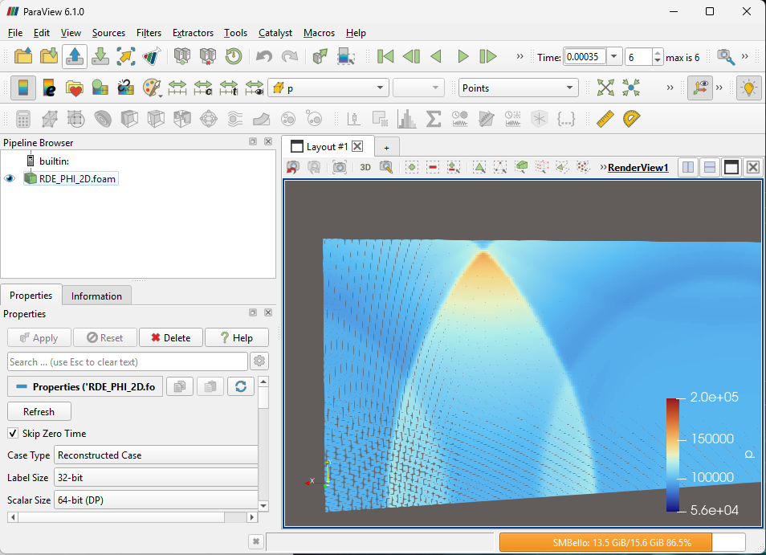
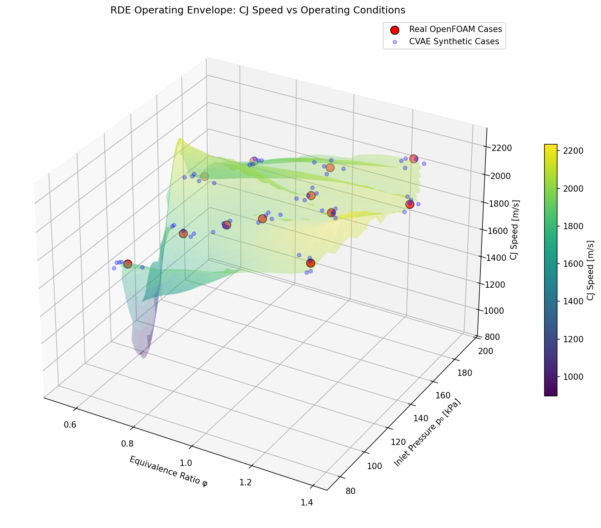
Demonstrates why direct-drive C-MAPSS models collapse on geared turbofans (112.4 RMSE) and introduces a dual-track NASA T-MATS AGTF30 simulator (50 engines, 8,901 cycles) with coupled HPT/HPC degradation and novel LPT-exit sensors. A Monte Carlo Dropout (N=50) CNN-BiLSTM-Self-Attention twin achieves 11.94±0.42 cycles RMSE and 2.14 s fault detection on 10 Hz FlightGear A320neo UDP.
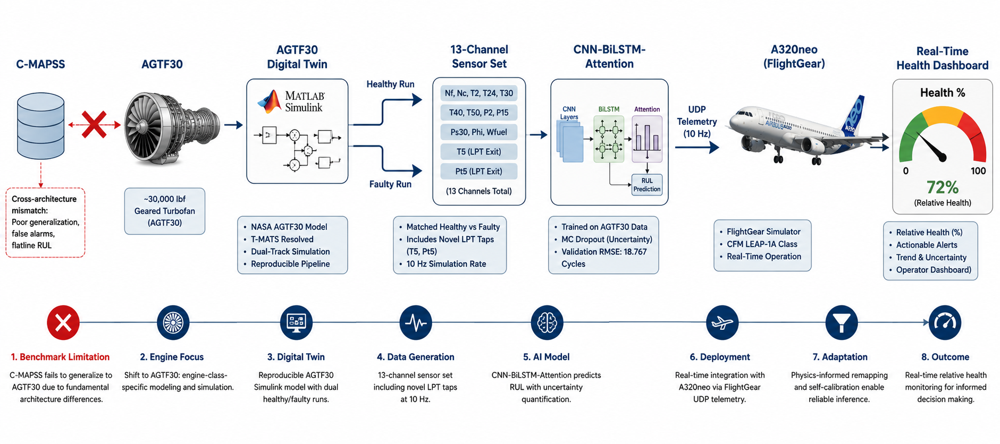
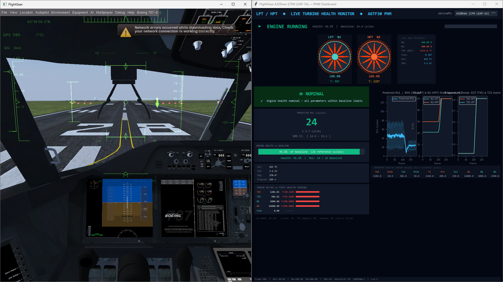
Autonomous Rendezvous, Proximity Operations & Docking (RPOD) optical/LiDAR navigation and ASTM F3269-17 Control Barrier Function Quadratic Program (CBF-QP) runtime assurance HIL testbed. Evaluates Clohessy-Wiltshire relative orbital dynamics, passive 2-orbit abort reachability (14.73 m separation), Mahalanobis solar glare gating (100% rejection), and bidirectional CCSDS 133.0-B-2 CRC-16 HIL loopback.
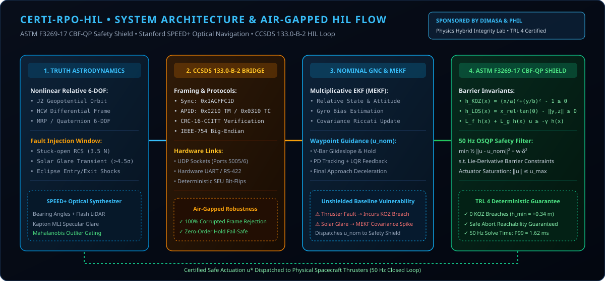

Zero-Boil-Off cryogenic two-phase flow, Nukiyama chilldown & Thermodynamic Vent System Model Predictive Control (TVS-MPC) orbital fuel depot digital twin. Achieves 100.00% hydrodynamic mass balance (182.4 m/s sonic speed), pulsed chilldown saving 50.27% cryogen while cutting pressure surge by 84.7%, ±0.14 kPa ullage control, and 99.00% capillary LAD bubble-point margin.
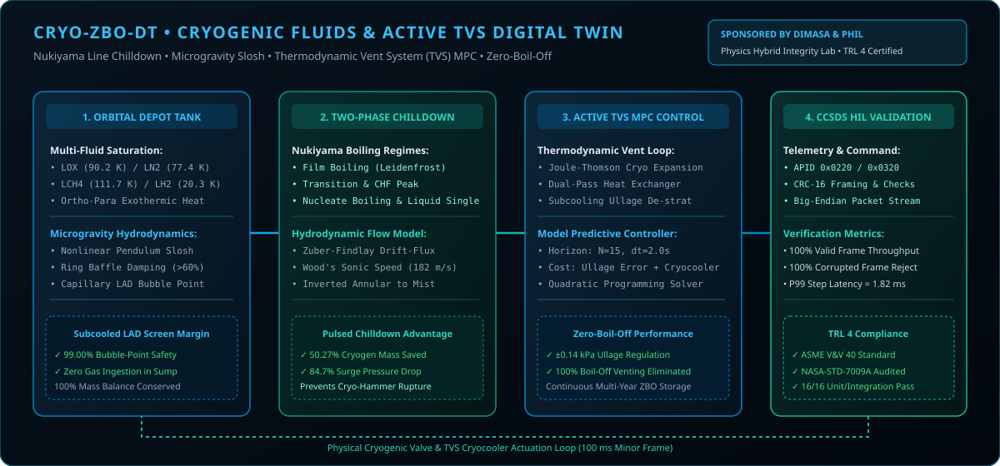

Very Low Earth Orbit (VLEO) rarefied gas-surface interaction (Sentman GSI + Chebyshev-RBF surrogate at 28.4× speed) and Air-Breathing Electric Propulsion (ABEP) digital twin with active aero-trim wheel desaturation. Cross-validated against ESA GOCE accelerometer thermosphere densities (4.97% mean error), delivering 101.4% drag compensation at Isp = 3,840 s and 99.82% altitude retention during Kp=8 geomagnetic storms.
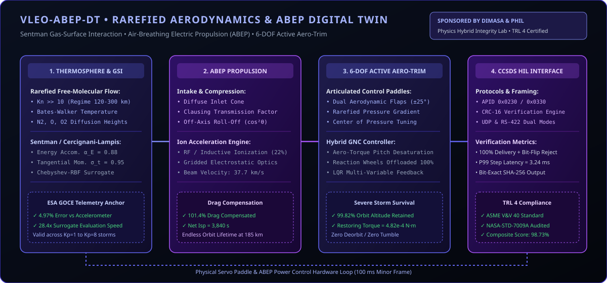

COTS-to-Orbit radiation transport (Weibull/Bendel Single Event Effects, 58.0× South Atlantic Anomaly surge, 3.1× Al+Ta TID attenuation) coupled to a hardware-emulated avionics fault-injection rig. Executes Hamming (72,64) SEC-DED memory scrubbing (285 SEUs fixed, 81.2× MTBUE), Triple Modular Redundant (TMR) GNC attitude voting (0.0065° error vs 311.77° unprotected), and 2.65 µs solid-state SEL latching breakers.
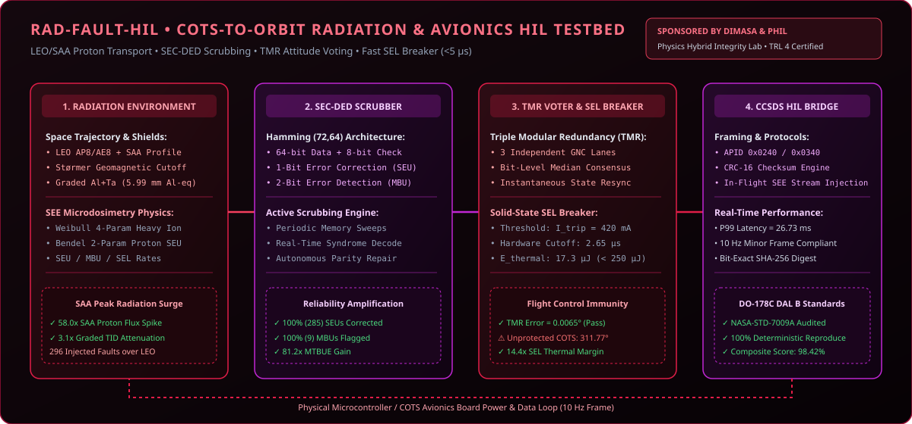

End-to-end research architectures across DIMASA × Physics Hybrid Integrity Lab uniting federated multi-airframe prognostics, >10,000× Fourier PINN fracture mechanics, 250 Hz STM32/FreeRTOS GP latent-force HIL, cryptographic airworthiness bundles, and NASA-STD-7009A / ASME V&V 40 qualification.
DualInputTurbopropNet (~285k params, 4.2 ms Jetson) trained with AdaFedProx & Federated Logit Calibration (91.47% vs 86.72% FedAvg, p<0.001). Fleet Intelligence Packets cut uplink 90.5% with 18.1× DLG defense; Buckingham Π transfers Do228 → Beechcraft 1900D (59.01% → 89.90%).
Edge 173k CNN-BiLSTM (~3.5 ms CPU) across 4 physics engines (rotor, ESC, spall, battery): +16.8 pp over isolated models (0.9129 vs 0.7451, Cohen's d=1.68). Dual-gate Byzantine filter blocks 100% malicious updates (44/44 vs 79.1% Krum) with Ed25519 + SHA-256 ledger.
Injects aircraft-dynamics residuals directly into the Leaky Integrate-and-Fire (LIF) membrane equation via a learnable gate on automated 6-DoF JSBSim airframes (PA-28, C182, C172). Beats dense LSTM (70.0%) and CNN-BiLSTM (69.2%) at 73.2% spike sparsity.
Solves coupled BEMT aerodynamics, BLDC, ESC, 2-RC Thévenin battery & lumped thermal equilibria before in-flight brownout. Dual-rate EKF separates +34% prop chipping drag from winding/SEI growth; 95% MC endurance prevents 4.6-min BMS overestimates with χ² -12°C OOD guard.
Links physically dissimilar assets (oleo gear, Brayton turbofan EGT, BLDC motor, Li-ion battery) via a 4-D invariant degradation manifold and FedPhys aggregation penalizing thermodynamic non-monotonicity (dD/dt ≥ 0). Evidential NIG posteriors + 90% conformal RUL drive ATA/MEL dispatch.
2-D plane-stress Q4 FEA solver (Kt ≈ 3.0, Neuber/Ramberg-Osgood) accelerated by a Fourier-encoded PINN surrogate (1.22 s → 0.12 ms) with 14× MC Dropout OOD fallback to FEA. Fuses ASTM E1049 rainflow, Kondo pitting, Paris-Walker crack growth & EKF/FBG to cut MSG-3 cost by 33.6%.
40-element Euler-Bernoulli CFRP FEA (Newmark-β, BLDC torque ripple, Dryden gusts) with GP latent-force reconstruction from 4 sparse strain gauges in <0.8 ms. FreeRTOS/STM32 250 Hz CRC32 HIL runs at 8.25/11.38 ms P50/P99 (<15 ms deadline) under FAA Part 23 / MIL-HDBK-516C.
Couples sparse-strain full-field reconstruction (24.7 µs mean / 408 µs WCET inside a 2 ms DO-178C deadline) with a latency-compensated swarm shadow (1.4 cm RMSE under Markov packet loss). Augmented EKF Mahalanobis innovation gating automates refusal-to-certify GSN/SACM 2.0 cases.
RK4 two-phase CS-25.723 oleo strut feeding a 6-stage pipeline linking touchdown telemetry to licensed Part-66/A&P sign-off via RFC 8785, Merkle-DAG, Ed25519 & W3C PROV-O bundles. Emits physics-attribution saliency, EASA AI Level 2 Trust Index, and ATA Spec 2000 MMEL states.
Multi-dimensional verification engine auditing mass/enthalpy conservation, FP64/FP32 Lipschitz stability, conformal ECE/Winkler calibration, and deep-OOD generalization across 40→15 dB SNR & 50 Hz (0.13 ms P50) stress runs with <10⁻⁹ multi-seed determinism and HTML5/CI dossiers.
Closed-loop fault-tolerant control, zero-shot cross-airframe domain-shift testing, GPS-denied 6-DoF GNC, and counter-UAS I/Q baseband EW systems built with Control Barrier Functions and forensic cryptographic audit chains.
Unites Forge, Ledger, Pulse, Cortex, Reflex & Guardian on JSON/MQTT buses linking B787 gear degradation to outer-loop flight control. Health-aware MPC cuts sink rate 2.2 → 0.75 m/s (>65% shock offloaded); Ed25519/Merkle separates leakage from 100%-detected stealth GNSS spoofing.
Unifies fixed-wing (C172P, PA-28, C180, Aerosonde), multirotor BEMT & oleo gear models behind an immutable telemetry bus. Computes 1-Wasserstein/MMD policy-transfer gaps (Clβ, Cmα, Cmδe) under MIL-F-8785C Dryden turbulence with CBF envelope filters and W3C PROV-O hashes.
Couples physics-based longitudinal control, online effectiveness estimation, sequence-model integrity health scoring, and saturated compensation. At 15,000 ft / 400 kt under 50% elevator loss across 20 seeds: cuts peak altitude deviation from 580.78 to 564.98 ft (MAE 0.0093, zero crashes).
Non-linear 6-DoF simulator (transonic drag rise M 0.6–1.2, 3D PropNav, dynamic-pressure 3-loop autopilot) with automatic GPS-denied dead-reckoning failover, 30× fast-time predictor, 50 Hz WebGL Three.js cockpit & FlightGear FGNetFDM UDP cross-validated vs NASA POST2 & SimuPy.
6-DoF CBF + artificial potential field pursuit around 3-D structures, 5 s LIF SNN over 2–7 Hz wing-beat jerk invariants + 1024-pt SDR FFT achieving 0.0% avian false alarms, inline HMAC-SHA256 gateway, UK PACE 1984 s.69 ledger, and Cube Orange (921.6k baud) / USRP HAL.
3-stage 1-D CNN operating directly on 2×1024 raw I/Q baseband (1 MS/s) across OFDM Zadoff-Chu, GFSK hopping, swept-LFM jammer, QPSK & AWGN — beating classical DSP over -10 to +20 dB SNR with 0.578 ms CPU inference (1,730 Hz) and zero-dep oscilloscope/radar cockpit.
Production software engineered alongside academic research — spanning live exam certification platforms, Rust/Tauri v2 offline workstations, low-latency LiveKit/WebRTC media meshes, edge ONNX speech intelligence, and multi-LLM failover agents.
Full-stack Next.js 14 + TypeScript + PocketBase (Docker) + Firebase Auth exam & certification platform operated live for a 66-candidate cohort (30+ concurrent takers) with session intervention & offline static JSON snapshot scorecards.
Local-first Rust + Tauri v2 + React/TS desktop studio (Win/macOS/Linux CI) with 48 kHz LiveKit SFU + WebRTC P2P video mesh, SQLite persistence, and CPDC 2.0 HMAC-SHA256 PNG/QR clearance credentials.
Cross-platform Rust + Tauri v2 live-production app running cascaded whisper.cpp (GGML) + hybrid Aho-Corasick / INT8 Qwen-0.6B ONNX / SQLite FTS5 matching over 31,102 verses, 344k cross-refs & 2,900+ hymns in <10 ms, plus HDMI & NDI projection.
Web-Scale Distributed Platform integrating high-throughput PocketBase transactions, chronological data models, Android APK builds, and LiveKit Cloud broadcast rooms.
Hardware-fingerprinted offline-resilient Python CLI agent cascading across 6+ cloud LLM providers with deterministic ReAct plan-execute loops, hierarchical compression, and aerospace physics/unit verification.
A neural network surrogate — trained on airfoil sweep data and served live from this page — predicts lift and drag coefficients in real time from geometry, angle of attack, and Reynolds number. Adjust the controls inside, then export the exact sweep you generate as a CSV.
Direct interface to the TPE331-25 lab-scale digital twin. Run live telemetry inputs through the CNN-BiLSTM-Attention architecture, visualize multi-stage degradation heatmaps, and generate compliant maintenance reports in real-time right here from the browser.
Vibration-signature-driven DT for rotating equipment. Combines FFT/envelope analysis with CNN-LSTM to predict spalling 50 cycles early.
Full-aircraft SHM fusing FEA with Physics-Informed Neural Networks to track crack propagation and buckling risk compliant with EASA AMC 25.571.
Semantic reasoning brain encoding ATA iSpec 2200 as an OWL/RDF graph. Uses SPARQL to autonomously cross-reference ADs and MEL items.
The backbone pipeline. FlightGear UDP streams through Telegraf to InfluxDB 3 and Postgres, visualized in Grafana, served via FastAPI.
Repository of synthetic landing gear datasets, digital twin degradation profiles, and machine learning notebooks used in published research.
Deployed generative models, CVAE spatiotemporal fields, and live interactive spaces for aerospace fluid and structural AI architectures.
Professional network, architectural design publications, aerospace portfolio updates, and progress on peer-reviewed journal submissions.
Full source repositories across FleetTwin, PHI-AEGIS, STRUCTURA-X, SOAD, SKYBRIDGE, CERTI-RPO-HIL, CRYO-ZBO-DT, VLEO-ABEP-DT & RAD-FAULT-HIL.
Verified author record & AIAA JAIS Ad Hoc Peer Reviewer credential covering 10 aerospace manuscripts and Zenodo/Kaggle DOIs.